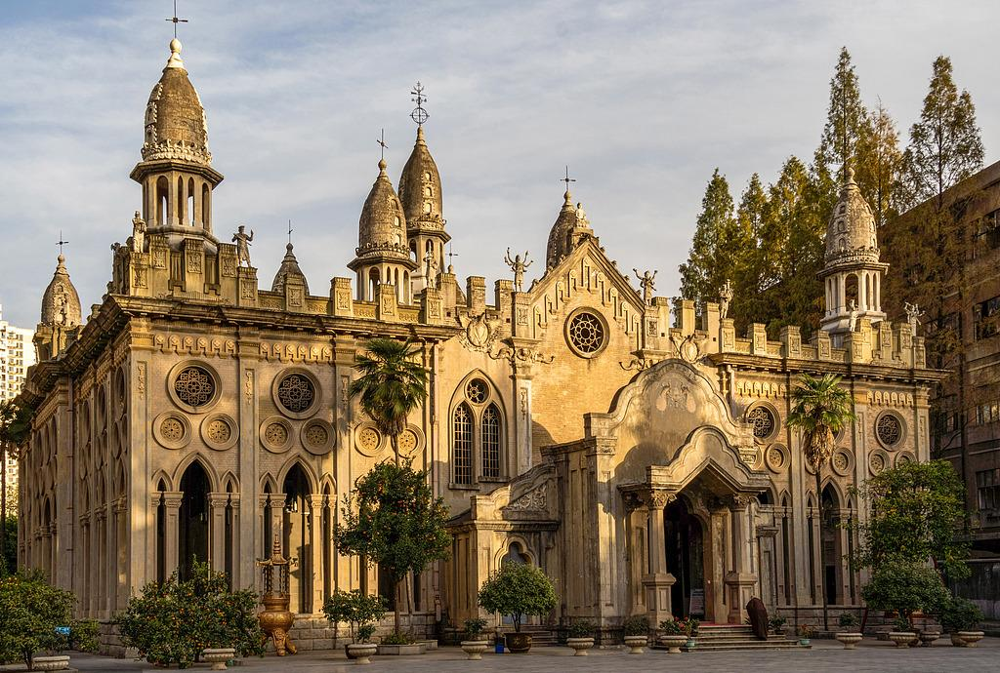

古德寺
票价：13元/人；现役军人（需持证）、65岁及以上老人（需持证）、残疾人（需持证）以及身高1.2米以下人员免票
开放：夏季上午8:00至下午4:30,冬季上午8:30至下午4:00
电话：027-82907553
交通：乘坐248路或548路至黄浦大街工农兵路站，步行约507米即可到达；乘坐地铁3号线至罗家庄站，步行约10分钟即可到达;。
地址：武汉市江岸区工农兵路24号
详情介绍:
古德寺位于湖北省武汉市江岸区黄浦路上滑坡，是一座融合汉传佛教与多元建筑风格的百年古刹，被誉为“汉传佛寺第一奇观”，兼具宗教神圣性与建筑艺术价值。
历史沿革:
始建于清光绪三年（1877年），初名“古德茅蓬”，由隆希法师创建，属禅宗临济宗。民国初年（1914-1919年）扩建，仿缅甸阿难陀寺形制重建，更名“古德寺”，寓意“心性好古，普度以德”。历经北伐战争、抗日战争损毁，文革期间遭严重破坏，1996年修复开放，现为全国重点文物保护单位。
建筑特色:
核心建筑圆通宝殿：主体为缅甸帕那瓦风格，顶部耸立9座佛塔（象征九龙拜圣），四面开96扇莲花拱窗；外立面融合哥特式尖券、罗马式廊柱、伊斯兰穹顶及中式雕花，全球罕见。殿内供奉华严三圣（释迦牟尼、文殊、普贤），顶部藻井绘有飞天彩画。多元文化符号：山门为古希腊科林斯柱式，天王殿屋顶设基督教十字架元素，后院有道教八卦亭，体现“佛耶道共存”的独特理念。
文化价值:
国内唯一集合印、缅、欧、中式建筑风格的汉传佛教寺庙，打破传统寺庙形制，反映清末民初中西文化交融的历史背景。寺内藏有清刻《大藏经》、民国时期佛像及斯里兰卡捐赠的玉佛等珍贵文物。
文化价值:
国内唯一集合印、缅、欧、中式建筑风格的汉传佛教寺庙，打破传统寺庙形制，反映清末民初中西文化交融的历史背景。寺内藏有清刻《大藏经》、民国时期佛像及斯里兰卡捐赠的玉佛等珍贵文物。
景区布局:
山门→天王殿（四大天王像）→圆通宝殿→方丈室。周边景观：东侧广场立有泰国捐赠的四面佛；西侧僧寮区保留民国青砖建筑；后院荷花池与竹林构成静谧禅意空间。
游览贴士:
上午9点前或下午3点后光线柔和，圆通宝殿仰拍角度可突出佛塔群；四季皆宜，秋日银杏与古寺相映成趣。宗教场所需衣着得体，殿内禁止拍摄佛像，保持安静。
古德寺以“一寺藏万象”的建筑奇观与包容精神，成为武汉宗教文化与近代史的活化石，更是探寻中西文明碰撞的绝佳窗口。